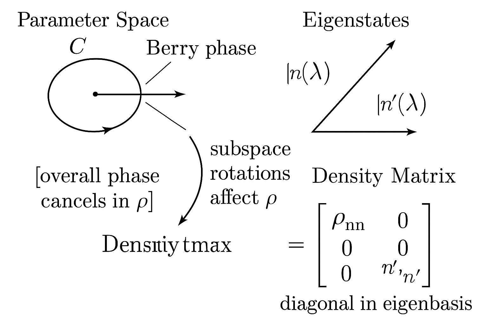
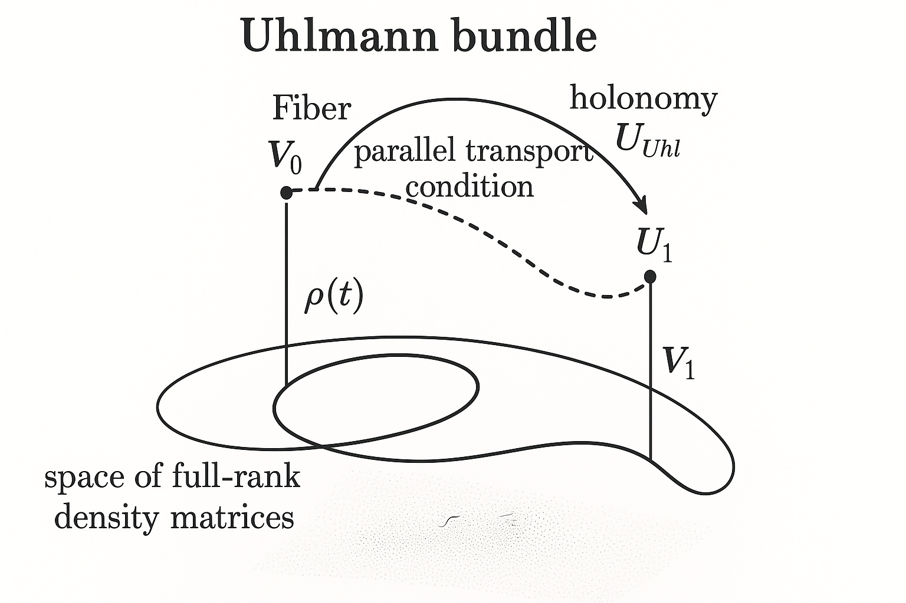
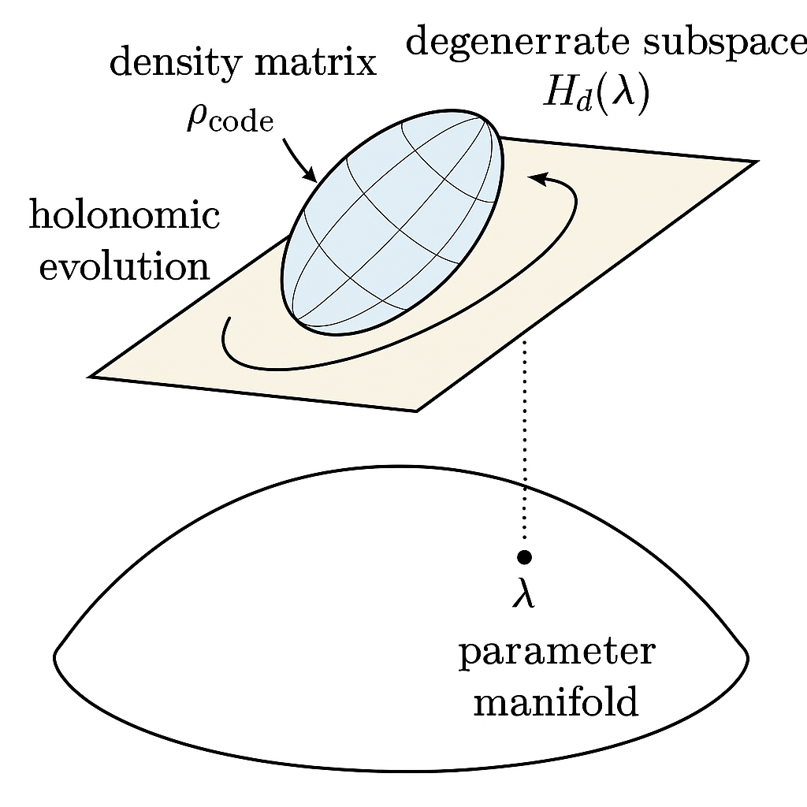
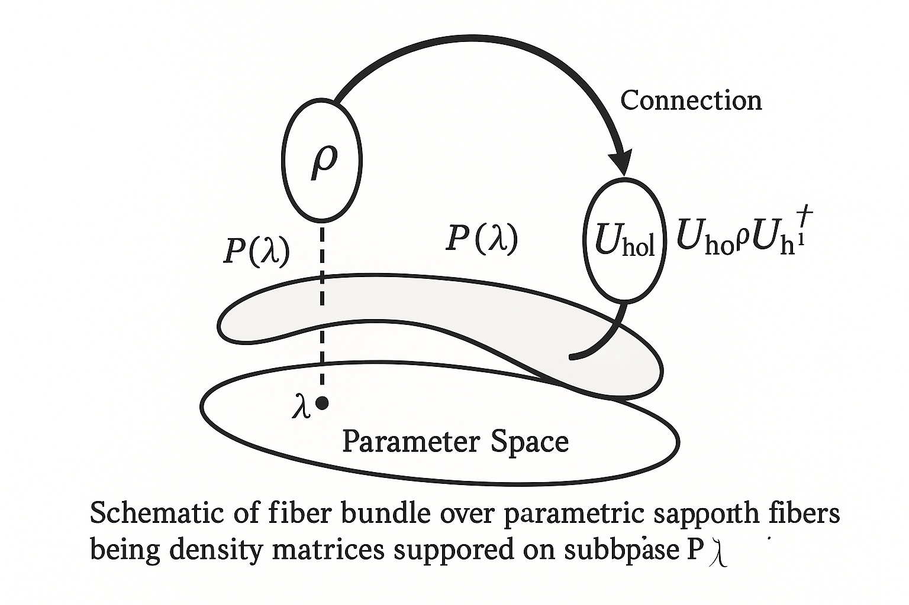
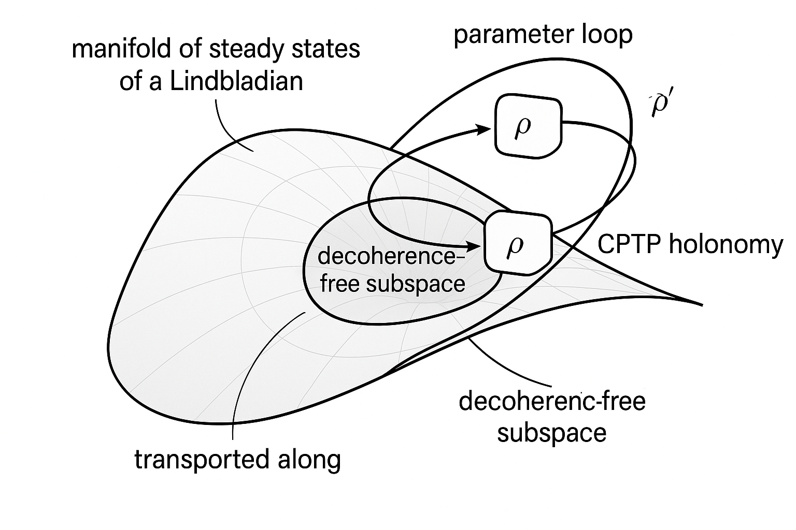
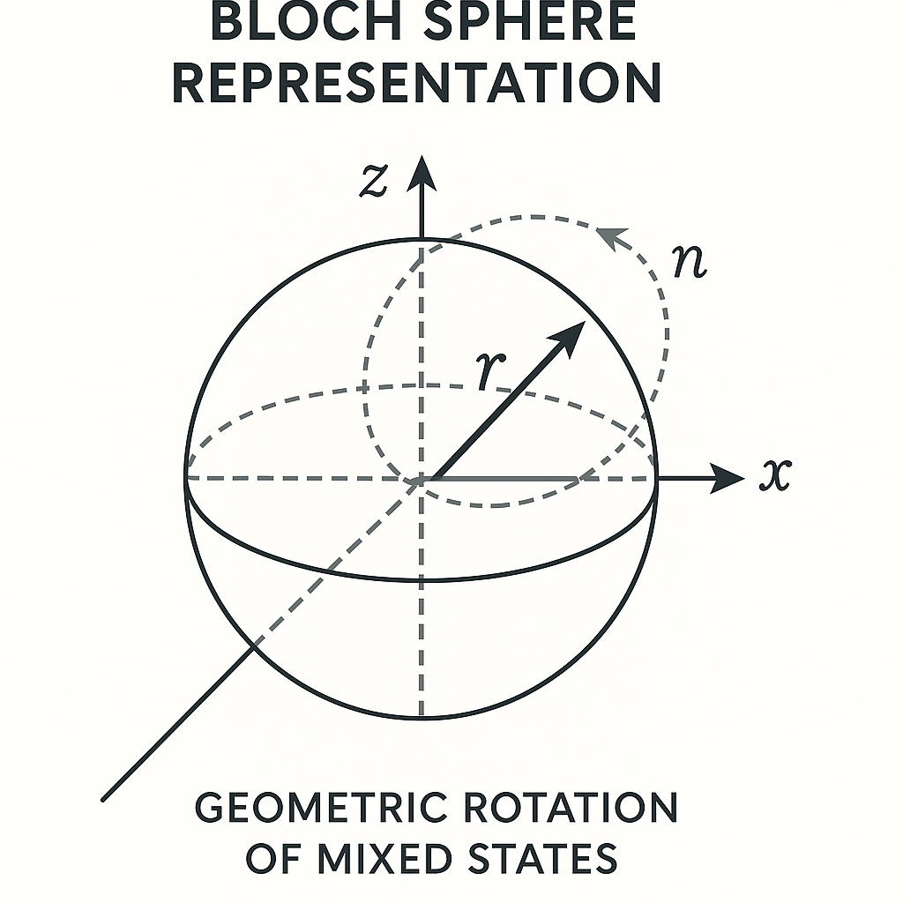
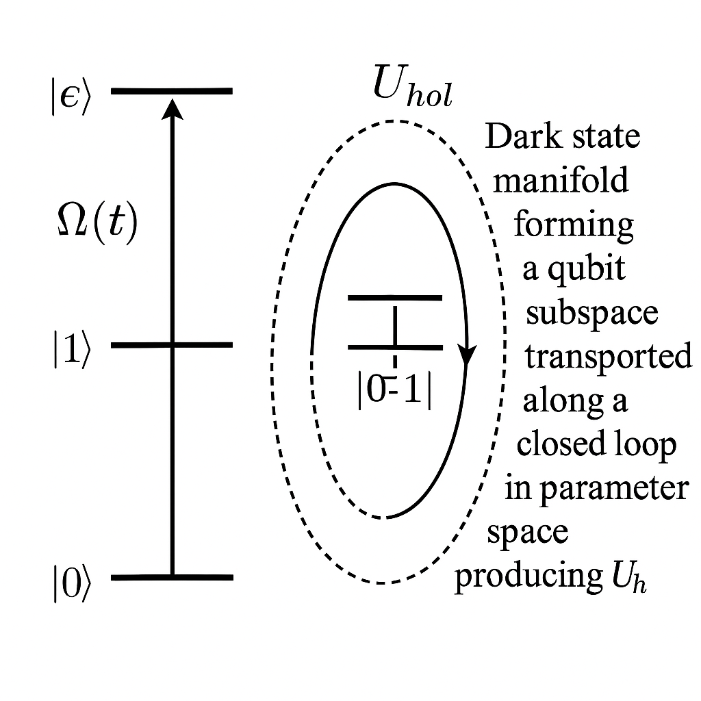
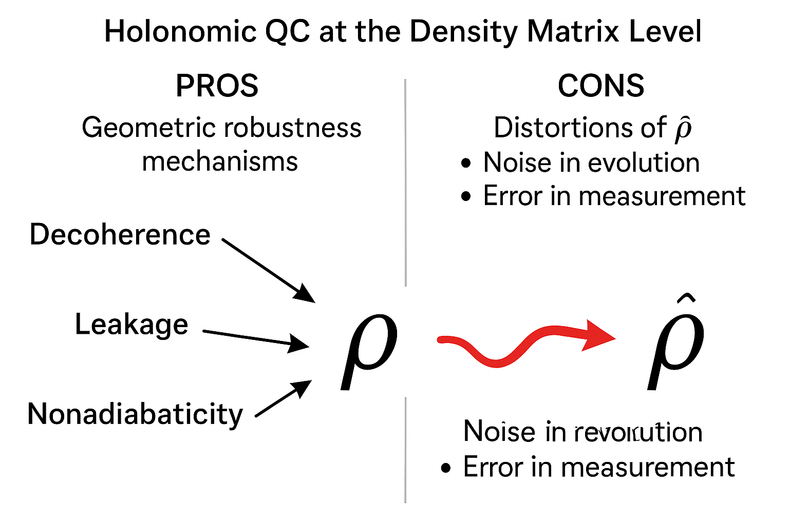

Generated by ChatGPT on 2025-12-16
逐字稿下載：ChatGPT_zh_L02_第_2_講_Density_matrix_Holonomic_Quantum_Computation.txt
完整音檔：
Segment 1:
Segment 2:
Segment 3:
Segment 4:
Segment 5:
Segment 6:
Segment 7:
Segment 8:
Segment 9:
Segment 10:
Segment 11:
Segment 12:
Segment 13:
本講延續第 1 講對密度矩陣與幾何結構的介紹，聚焦於：
本講主題重點會放在：
給定一族參數化的哈密頓量 \(H(\lambda)\)，\(\lambda\) 屬於某個參數流形 \(\mathcal{M}\)，設 \[ H(\lambda) \ket{n(\lambda)} = E_n(\lambda) \ket{n(\lambda)}, \] 且在某個能階 \(n\) 上是非簡併（或在某一退簡併子空間上投影）。假設系統以絕熱方式沿著一條閉路徑 \(\mathcal{C}: \lambda(t)\) 演化，起點 \(\lambda(0) = \lambda(T)\)，若初態為 \[ \ket{\psi(0)} = \ket{n(\lambda(0))}, \] 則絕熱演化下，終態近似為 \[ \ket{\psi(T)} = e^{i\gamma_n[\mathcal{C}]} e^{-i \int_0^T E_n(\lambda(t)) dt} \ket{n(\lambda(0))}, \] 其中 \(\gamma_n[\mathcal{C}]\) 是 Berry 相位： \[ \gamma_n[\mathcal{C}] = i \oint_{\mathcal{C}} \braket{n(\lambda)| \nabla_\lambda n(\lambda)} \cdot d\lambda. \]
若用密度矩陣 \(\rho(t) = \ket{\psi(t)}\bra{\psi(t)}\) 表示，則演化後 \[ \rho(T) = \ket{\psi(T)}\bra{\psi(T)} = \ket{n(\lambda(0))}\bra{n(\lambda(0))}, \] 所以密度矩陣本身 不包含 Berry 相位（整體相位被消去）。但是如果考慮包含多個能階或子空間 \[ \rho(0) = \sum_n p_n \ket{n(\lambda(0))}\bra{n(\lambda(0))}, \] 且在絕熱演化中允許 退簡併子空間內的非阿貝爾幾何相位，那麼最終 \(\rho(T)\) 會包含 非平凡的基底轉換： \[ \rho(T) = U_{\text{hol}} \rho(0) U_{\text{hol}}^\dagger, \] 其中 \(U_{\text{hol}}\) 是 霍洛諾米（holonomy），可用來實作量子邏輯閘。
這提示：若只考慮整體相位，密度矩陣會看不見 Berry phase；但若考慮子空間幾何結構，密度矩陣可以捕捉非阿貝爾的 holonomy。 混態幾何相位的關鍵在於如何在 機率分佈 + 子空間結構 上定義幾何物件。

, Berry phase on rays, and a density matrix diagonal in eigenbasis; emphasize that overall phase cancels in ρ but subspace rotations affect ρ">對於混態 \(\rho\)，Uhlmann 提出一個幾何相位的自然推廣。想法是：
具體地，令 \(\rho(t)\) 是一條滿秩的密度矩陣軌跡，對任意 \(t\)，選擇一個分解 \[ \rho(t) = W(t) W(t)^\dagger. \] Uhlmann 定義平行輸運條件為：對任意 \(t\)，使得 \(W(t)\) 和 \(W(t+dt)\) 的內積實部最大化： \[ \max_{W(t+dt)} \; \mathrm{Re} \, \mathrm{Tr}[ W(t)^\dagger W(t+dt) ]. \] 這相當於在 amplitude 空間上定義一個聯絡（connection），從而可定義 Uhlmann holonomy。
更具體的運算式可以寫成（略過嚴格性，給出形式結果）： 若將 \(\rho(t)\) 對角化： \[ \rho(t) = \sum_k p_k(t) \ket{k(t)}\bra{k(t)}, \] 則 amplitude 可以選成 \[ W(t) = \sqrt{\rho(t)} V(t), \] 其中 \(V(t)\) 是某個單位算符。平行輸運條件導致 \[ \dot{V}(t) = -\sqrt{\rho(t)}^{-1} \left[ \dot{\sqrt{\rho(t)}} \right]_{\text{anti-H}} \sqrt{\rho(t)}^{-1} V(t), \] 其中 \([\cdot]_{\text{anti-H}}\) 表示反 Hermitian 部分。解出 \(V(t)\) 之後，對一個閉路 \(\rho(0) = \rho(T)\)，定義 Uhlmann 幾何相位對應的 holonomy： \[ U_{\text{Uhl}} = V(T) V(0)^\dagger. \]
Uhlmann 相位的直覺解釋：

然而 Uhlmann 相位與實際干涉實驗間的直接關聯較間接，故後續亦出現以 干涉可測量性 為導向之混態幾何相位定義（例如 Sjöqvist 等人）。
另一個較具實驗意義的混態幾何相位定義是由 Sjöqvist et al. 提出，針對 平行輸運演化 的混態考慮其可觀測干涉相位。
考慮系統初態密度矩陣 \[ \rho(0) = \sum_k p_k \ket{k(0)}\bra{k(0)}, \] 在單位演化 \(U(t)\) 下演化為 \[ \rho(t) = U(t) \rho(0) U^\dagger(t). \] 若要求演化滿足 平行輸運條件（對每一個本徵向量 \(\ket{k(t)} = U(t)\ket{k(0)}\) 都滿足 \[ \braket{k(t) | \dot{k}(t)} = 0, \] 使其動力學相位被剝除），那麼 Sjöqvist 等人定義混態幾何相位為 \[ \gamma_{\text{Sjö}} = \arg \left( \sum_k p_k \braket{k(0) | k(T)} \right). \] 若演化路徑構成循環（\(\rho(0)=\rho(T)\)），則 \(\ket{k(T)}\) 可能與 \(\ket{k(0)}\) 相差一個幾何相位，因此上述定義等效於 對各本徵成分的幾何相位以機率加權 再取總相位。
此定義與 Uhlmann 相位在結構上不同，且一般不相同，但在某些極限（如近純態、或特定模型）會有一致性。對 Holonomic Quantum Computation 而言，真正重要的是：我們可以在密度矩陣層次定義一個可實驗觀測的幾何效應，並藉此設計幾何量子閘。
在 Holonomic Quantum Computation 中，我們不只關心相位 \(\mathrm{U}(1)\)，而是關心 退簡併子空間中的非阿貝爾幾何變換。在純態情況，若某能階 \(E(\lambda)\) 有 \(d\)-重退簡併，對應本徵空間 \[ \mathcal{H}_d(\lambda) = \mathrm{Span}\{ \ket{n_a(\lambda)} \}_{a=1}^d, \] 作為「計算子空間」（code subspace）。絕熱演化沿參數空間閉路 \(\mathcal{C}\) 導致在該子空間上實作一個非阿貝爾霍洛諾米： \[ U_{\text{hol}}[\mathcal{C}] = \mathcal{P} \exp\left( - \oint_{\mathcal{C}} \mathcal{A}(\lambda) \cdot d\lambda \right), \] 其中 \(\mathcal{A}(\lambda)\) 是 Berry 連接矩陣， \[ \mathcal{A}_{ab}(\lambda) = i \braket{n_a(\lambda) | \nabla_\lambda n_b(\lambda)}. \]
在密度矩陣層次，我們考慮初態在該退簡併子空間上為某個（可能是混態）密度矩陣 \[ \rho_{\text{code}}(0) = \sum_{a,b=1}^d \rho_{ab}(0) \ket{n_a(\lambda(0))}\bra{n_b(\lambda(0))}. \] 在 adiabatic 演化與適當的幾何條件下，若能忽略動力學相位或把它補償掉，最終 \[ \rho_{\text{code}}(T) = U_{\text{hol}}[\mathcal{C}] \, \rho_{\text{code}}(0) \, U_{\text{hol}}^\dagger[\mathcal{C}]. \]
此處 Holonomic gate 的關鍵是 子空間保持不與其它能階混合，即 adiabatic 條件保證投影 \(P(\lambda)\) 隨 \(\lambda\) 改變但子空間維度與能隙結構維持。
對混態而言，最重要的差別不在幾何連接的形式，而是：

對 Holonomic QC 的幾何定式，可以在 投影算符流形 上建立束結構。考慮一個固定維度 \(d\) 的投影算符集合： \[ \mathcal{P}_d = \left\{ P \mid P^2 = P = P^\dagger, \ \mathrm{Tr} P = d \right\}, \] 此流形等價於 Grassmann 流形 \( \mathrm{Gr}(d, N)\)，如果底層希爾伯特空間維度為 \(N\)。每一個 \(P(\lambda)\) 對應一個 \(d\)-維子空間 \(\mathcal{H}_d(\lambda)\)。在這子空間上，我們允許任意密度矩陣 \[ \rho_{\text{code}}(\lambda) \in \mathcal{D}(P(\lambda)\mathcal{H}), \quad \mathrm{supp}(\rho_{\text{code}}(\lambda)) \subseteq \mathrm{Im}(P(\lambda)). \]
可以形式上定義一個「bundle」：
在這個觀點，Holonomic gate 相當於在 \(\mathcal{M}\) 上循環一次，使得纖維之間的 平行輸運 導致一個非平凡的 holonomy \(U_{\text{hol}}\)。而密度矩陣作為纖維內容，跟著此 holonomy 演化。
要把這個 picture 具體化，需要引入 投影算符的聯絡。定義 \[ P(\lambda) = \sum_{a=1}^d \ket{n_a(\lambda)}\bra{n_a(\lambda)}, \] 對任一 \( \ket{\phi(\lambda)} \in \mathrm{Im}(P(\lambda))\)，其平行輸運條件可寫成 \[ P(\lambda) \, \nabla_\lambda \ket{\phi(\lambda)} = 0, \] 此條件等效於在該子空間上定義一個聯絡 1-形式 \(\mathcal{A}(\lambda)\)， \[ \nabla_\lambda \ket{\phi} = \left( \partial_\lambda + i\mathcal{A}(\lambda)\right)\ket{\phi}. \]
對密度矩陣 \( \rho_{\text{code}}(\lambda) \)，若以局部基底 \(\ket{n_a(\lambda)}\) 展開，其 平行輸運 可寫成 \[ \nabla_\lambda \rho_{\text{code}} = \partial_\lambda \rho_{\text{code}} + i [\mathcal{A}(\lambda), \rho_{\text{code}}] = 0. \] 整個絕熱循環之後，解出 \[ \rho_{\text{code}}(T) = \mathcal{P} \exp\left( - i\int_0^T dt \, \dot{\lambda}(t) \cdot \mathcal{A}(\lambda(t)) \right) \rho_{\text{code}}(0) \mathcal{P} \exp\left( + i\int_0^T dt \, \dot{\lambda}(t) \cdot \mathcal{A}(\lambda(t)) \right), \] 其中 exponent 內的矩陣即為 \(U_{\text{hol}}\)。這整個描述 完全在密度矩陣算符層次成立，不依賴純態向量。

在純態文獻中，實作一個幾何量子閘（holonomic gate）通常需滿足三個條件：
在密度矩陣描述下可以等價重寫為：
這個條件組合展示：holonomic gate 對純態與混態的幾何結構是一致的，差別只在於我們把狀態空間改成算符空間，而且所有幾何信息都以「共軛作用」形式出現。
在定義 Berry 連接與 holonomy 時，需處理 gauge 變換 問題：對退簡併子空間，基底選取 \(\{\ket{n_a(\lambda)}\}\) 並不唯一，任意 \[ \ket{n_a'(\lambda)} = \sum_b \ket{n_b(\lambda)} V_{ba}(\lambda), \quad V(\lambda)\in \mathrm{U}(d), \] 導致 \[ \mathcal{A}' = V^{-1}\mathcal{A} V + i V^{-1} \nabla V, \] \[ U_{\text{hol}}'[\mathcal{C}] = V^{-1}(\lambda(0)) \, U_{\text{hol}}[\mathcal{C}] \, V(\lambda(0)). \]
在密度矩陣的觀點，物理解是 gauge 不變的，因為：
這點也反映在混態幾何相位的不同定義上：Uhlmann phase 與 Sjöqvist phase 本質上都是在 等價類代表之間選擇一種「規範」，以定義平行輸運條件，而最終幾何相位或 holonomy 僅依賴路徑與物理可觀測結構，不依賴特定表示。
實際物理系統往往是開放的，演化遵守 Lindblad 主方程： \[ \dot{\rho}(t) = -i [H(\lambda(t)),\rho(t)] + \sum_\alpha \left( L_\alpha(\lambda(t)) \rho(t) L_\alpha^\dagger(\lambda(t)) - \frac{1}{2}\{L_\alpha^\dagger(\lambda(t)) L_\alpha(\lambda(t)), \rho(t)\} \right). \]
若要在此情境下保持 Holonomic 結構，我們需要條件來保證「碼空間」的封閉性。考慮投影 \(P(\lambda(t))\) 做為欲維持的子空間，則理想情況下要求： \[ \rho(0) = P(\lambda(0)) \rho(0) P(\lambda(0)) \quad \Rightarrow \quad \rho(t) = P(\lambda(t)) \rho(t) P(\lambda(t)) \ \forall t. \]
這意味著：Lindblad 演化的 non-unitary 部分 不能將狀態洩漏到子空間之外。充分條件之一是
在這種情形下，對子空間限制的演化可寫為 \[ \dot{\rho}_{\text{code}} = -i [H_{\text{eff}}(\lambda(t)), \rho_{\text{code}}] + \sum_\alpha \left( \tilde{L}_\alpha(\lambda(t)) \rho_{\text{code}} \tilde{L}_\alpha^\dagger(\lambda(t)) - \frac{1}{2}\{\tilde{L}_\alpha^\dagger(\lambda(t)) \tilde{L}_\alpha(\lambda(t)), \rho_{\text{code}}\} \right), \] 其中 \(H_{\text{eff}} = P H P\)，\(\tilde{L}_\alpha = P L_\alpha P\)。
關鍵問題：在這樣的非單位演化中，是否仍可定義「holonomic gate」？答案是可以，但結構變成 完全正（CPTP）映射的幾何 holonomy，而不再是單純的單位算符。
考慮一族隨參數變化的 CPTP 映射 \(\mathcal{E}_\lambda\)，在時間演化中產生 \[ \rho(t) = \mathcal{T} \exp\left( \int_0^t dt' \, \mathcal{L}_{\lambda(t')} \right) [\rho(0)], \] 其中 \(\mathcal{L}_{\lambda}\) 是 Lindbladian 超算符。若對每一 \(\lambda\) 存在一個 穩態子空間（decoherence-free subspace 或 noiseless subsystem） \[ \mathcal{L}_\lambda[\rho_{\text{dfs}}] = 0, \] 且該子空間隨 \(\lambda\) 變化而形成一個「參數化的穩態子空間束」，則在絕熱極限下，系統可以 被限制在穩態流形上，並在該流形內經歷幾何 holonomy。
這樣的結構在文獻中常被稱為 非單位 Holonomic QC 或 開放系統幾何運算。數學上可以視為在「穩態密度矩陣流形」上定義一個聯絡，並對參數循環取 holonomy。
以密度矩陣表述，假設對每一 \(\lambda\) 有一個 \(d\)-維穩態子空間（其狀態空間為 \(\mathcal{D}_\lambda^{\text{ss}}\)），且 Lindbladian 在這子空間上為零或只給出全體相同的衰減因子。則對一個閉路徑 \(\mathcal{C}\) 上的 adiabatic 變化，可得到一個在穩態空間上的 CPTP holonomy \(\mathcal{U}_{\text{hol}}\)： \[ \rho_{\text{ss}}(T) = \mathcal{U}_{\text{hol}}[\mathcal{C}](\rho_{\text{ss}}(0)). \] 在特殊情況下，\(\mathcal{U}_{\text{hol}}\) 可簡化為單位共軛作用；更一般地，它是一個非單位的 CPTP 映射，依然由路徑 \(\mathcal{C}\) 的幾何結構所決定。

雖然真正的非阿貝爾 holonomy 至少需要三能階（或兩量子位元）退簡併子空間，但作為直覺例子，先看一個簡化版，說明混態在 Bloch 球上如何受幾何演化影響。
考慮一個單量子位元，哈密頓量 \[ H(\mathbf{n}) = -\frac{\Delta}{2} \, \mathbf{n} \cdot \boldsymbol{\sigma}, \] 其中 \(\mathbf{n} \in S^2\) 為控制參數，\(\boldsymbol{\sigma} = (\sigma_x,\sigma_y,\sigma_z)\)。此哈密頓量有兩個能階 \(E_\pm = \pm \Delta/2\)，分別對應本徵態 \(\ket{\pm(\mathbf{n})}\)，並形成二維希爾伯特空間。
假設我們關注的是 下能階 對應的本徵態 \(\ket{-(\mathbf{n})}\)，但現在我們不把它當作純態，而是考慮一個以 \(\{\ket{+(\mathbf{n})}, \ket{-(\mathbf{n})}\}\) 為基底的混態： \[ \rho(\mathbf{n}) = \frac{1}{2}(\mathbb{I} + \mathbf{r}(\mathbf{n}) \cdot \boldsymbol{\sigma}), \quad |\mathbf{r}| < 1. \] 在參數空間 \(S^2\) 上，我們讓 \(\mathbf{n}(t)\) 繞行一個閉路徑 \(\mathcal{C}\)，並假設演化時間尺度足夠慢（絕熱條件），使得 Bloch 向量 \(\mathbf{r}\) 隨 \(\mathbf{n}\) 旋轉。
事實上，在此簡化模型中，若考慮絕熱演化僅投影在下能階子空間，則 Hilbert 空間維度變為 1，無法產生非阿貝爾 holonomy。要看到真正的 Holonomic gate，需要退簡併子空間，例如兩個量子位元的某個雙重退簡併能階。但即使如此，單量子位元模型仍有助於理解 混態在 Bloch 球上的幾何旋轉。

考慮一個典型的三能階 Lambda 系統 \(\{\ket{0},\ket{1},\ket{e}\}\)，其中 \(\ket{0}, \ket{1}\) 為兩個穩態（基態），\(\ket{e}\) 為激發態。透過兩個雷射場耦合： \[ H(t) = \Omega_0(t) \ket{e}\bra{0} + \Omega_1(t) \ket{e}\bra{1} + \text{h.c.} \] 在適當共振條件與拉曼近似下，存在一個 暗態（dark state）： \[ \ket{D(t)} = \frac{1}{\Omega(t)}\left( \Omega_1(t) \ket{0} - \Omega_0(t)\ket{1} \right), \quad \Omega(t) = \sqrt{|\Omega_0(t)|^2 + |\Omega_1(t)|^2}. \] 以及一個 亮態（bright state）\(\ket{B(t)}\) 和激發態 \(\ket{e}\)，組成三維空間。若設計 \(\Omega_0(t), \Omega_1(t)\) 的時間變化，使演化保持在 \(\mathrm{Span}\{\ket{0},\ket{1}\}\) 子空間，且 \(\ket{e}\) 僅作為虛擬中介而不被實佔，則可在 \(\{\ket{0},\ket{1}\}\) 上實作非阿貝爾 holonomy。
若初態為該子空間內的混態 \[ \rho_{\text{code}}(0) = \begin{pmatrix} \rho_{00} & \rho_{01} \\ \rho_{10} & \rho_{11} \end{pmatrix} \] （在 \(\{\ket{0},\ket{1}\}\) 基底），在絕熱循環後，我們得到 \[ \rho_{\text{code}}(T) = U_{\text{hol}} \rho_{\text{code}}(0) U_{\text{hol}}^\dagger, \] 其中 \(U_{\text{hol}} \in \mathrm{SU}(2)\) 由參數 \((\Omega_0(t),\Omega_1(t))\) 在參數空間所繞行之閉路徑決定。
重點：此處 Holonomic 旋轉不依賴於 \(\rho_{\text{code}}(0)\) 的「純度」，無論是純態、部分混態或最大混態，只要它的支撐限制在 \(\{\ket{0},\ket{1}\}\) 子空間，演化規則都是一樣的： \[ \rho \mapsto U_{\text{hol}} \rho U_{\text{hol}}^\dagger. \] 這體現了 Holonomic gate 在密度矩陣層次的 結構穩定性。

, |1>, |e>, with laser couplings Ω0(t) and Ω1(t); show dark state manifold forming a qubit subspace transported along a closed loop in parameter space producing U_hol">以密度矩陣視角研究 Holonomic QC，可清楚點出其對雜訊的優勢與限制：
然而，在密度矩陣視角下，也可以清楚看到 Holonomic QC 的挑戰：

本講從密度矩陣出發，系統性整理了 Holonomic Quantum Computation 的幾何結構與混態推廣：
在接下來的講次中，我們將：